Nginx学习
Nginx学习
Nginx介绍
Nginx是一个高性能的HTTP、反向代理服务器
主要功能：
- 反向代理
- 实现集群和负载均衡
- 静态资源虚拟化
Nginx的版本：
- Nginx开源版 http://nginx.org/en/
官方原始的Nginx版本
- Nginx plus商业版
开箱即用，集成了大量功能
- Open Resty https://openresty.org/cn/
OpenResty是一个基于Nginx与 Lua 的高性能 Web 平台，其内部集成了大量精良的 Lua 库、第三方模块以及大多数的依赖项。更适用于需要大量二次开发的场景，有极强的扩展性
- Tengine https://tengine.taobao.org/
由淘宝网发起的Web服务器项目。它在Nginx的基础上，针对大访问量网站的需求，添加了很多高级功能和特性。Tengine的性能和稳定性已经在大型的网站如淘宝网，天猫商城等得到了很好的检验。相比于Open Resty，扩展性不够强，但是能够满足绝多数使用场景
什么是代理
正向代理
正向代理可以理解为「客户端」的代理
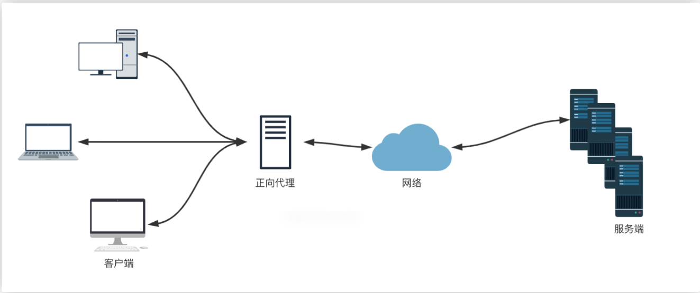
反向代理
反向代理可以理解为「服务器」的代理
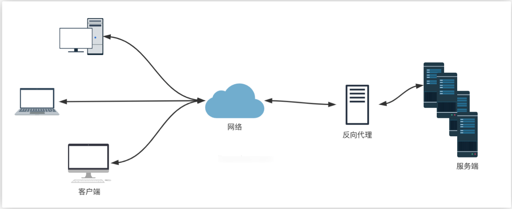
Nginx安装相关
下载与安装
下载源代码手动编译安装(推荐)，下载Nginx包：官网下载地址
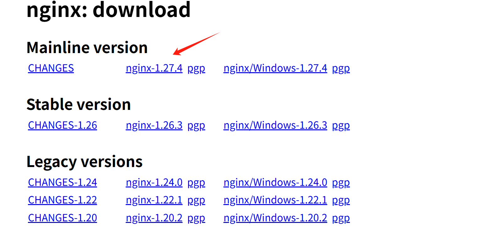
解压Nginx包，并安装
tar -zxvf nginx-1.27.4.tar.gz
[root@nginx ~]# cd nginx-1.27.4
[root@nginx nginx-1.27.4]# ls
安装依赖库
#安装各种依赖
yum install -y gcc gcc-c++ make pcre pcre-devel zlib zlib-devel
编译安装
./configure --prefix=/usr/local/nginx # 指定编译选项，--prefix选项指定安装的目录
make # 编译
make install # 安装编译结果
#执行make的结果，这个就是正确的
make[1]: Leaving directory '/root/nginx-1.27.4'
启动
cd /usr/local/nginx/sbin
ls # 里面是一个nginx的可执行文件
./nginx # 这个就是nginx的可执行文件
systemctl stop firewalld #关闭防火墙才可以访问，内网我就直接关闭了
# 开放端口，例子：firewall-cmd --zone=public --add-port=80/tcp --permanent
firewall-cmd --zone=public --add-port=端口号/协议 --permanent
# 修改后，重启防火墙才会生效
firewall-cmd --reload
补充：--zone参数为防火墙规则应用的区域
区域包括：
public：用于公共网络，例如 Internet。
internal：用于内部网络，例如公司内部网络。
external：用于外部网络，例如连接到互联网的网络。
work：用于工作场所网络。
home：用于家庭网络。
注册为系统服务
注册为系统服务后，可以以系统服务的方式启动nginx
新增系统服务配置文件
vim usr/lib/systemd/system/nginx.service
[Unit]
Description=nginx
After=network.target remote-fs.target nss-lookup.target
[Service]
Type=forking
PIDFile=/usr/local/nginx/logs/nginx.pid
ExecStartPre=/usr/local/nginx/sbin/nginx -t -c /usr/local/nginx/conf/nginx.conf
ExecStart=/usr/local/nginx/sbin/nginx -c /usr/local/nginx/conf/nginx.conf
ExecReload=/usr/local/nginx/sbin/nginx -s reload
ExecStop=/usr/local/nginx/sbin/nginx -s stop # 停止
ExecQuit=/usr/local/nginx/sbin/nginx -s quit
PrivateTmp=true
[Install]
WantedBy=multi-user.target
文件注释
[Unit]
Description=nginx
After=network.target remote-fs.target nss-lookup.target
[Service]
Type=forking
PIDFile=/usr/local/nginx/logs/nginx.pid
ExecStartPre=/usr/local/nginx/sbin/nginx -t -c /usr/local/nginx/conf/nginx.conf
ExecStart=/usr/local/nginx/sbin/nginx -c /usr/local/nginx/conf/nginx.conf
ExecReload=/usr/local/nginx/sbin/nginx -s reload
ExecStop=/usr/local/nginx/sbin/nginx -s stop
ExecQuit=/usr/local/nginx/sbin/nginx -s quit
PrivateTmp=true
[Install]
WantedBy=multi-user.target
重新加载系统文件
systemctl daemon-reload
系统服务如何使用？
systemctl enable xxx服务名 # 自启动服务
systemctl status xxx服务名 # 服务运行状态
systemctl start xxx服务名
systemctl reload xxx服务名
Nginx常用命令
./nginx -s stop # 快速停止（正在进行的请求会直接被中断，很少使用）
./nginx -s quit # 处理完已接受的请求后，才会停止（优雅关机）
./nginx -s reload # 重新加载配置
./nginx -c xxx.conf # 配置nginx使用的配置文件地址（默认为conf/nginx.conf ）
./nginx -t # 检查nginx配置是否正确
./nginx -v # nginx版本号
给nginx配置好系统服务之后可以用systemctl 来使用nginx命令
systemctl start nginx
systemctl stop nginx
systemctl restart nginx
systemctl reload nginx
查看nginx状态
ps -ef|grep nginx
pgrep -f nginx
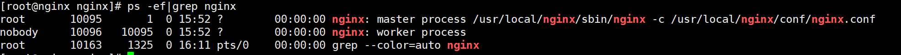
Nginx目录
Nginx一般安装在/usr/local/nginx目录下（安装时--prefix可指定安装目录）
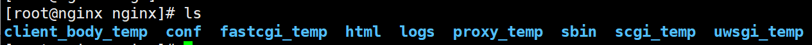
conf #配置文件
｜-nginx.conf # 主配置文件
｜-其他配置文件 # 可通过那个include关键字，引入到了nginx.conf生效
html #静态页面
logs（默认不是放在这里，可以在配置文件中修改为这里）
｜-access.log #访问日志(每次访问都会记录)
｜-error.log #错误日志
｜-nginx.pid #进程号
sbin
｜-nginx #主进程文件
*_temp #运行时，生成临时文件
Nginx进程模型
一个Master：监听请求，并分配worker进程处理
默认一个worker进程（可以在配置文件中修改worker数量）：处理客户端请求

每个worker之间彼此独立，每一个worker处理多个请求
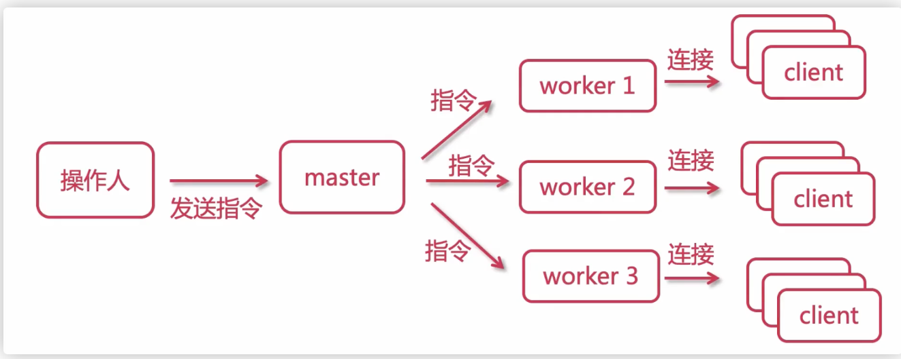
worker的抢占机制
多个worker进程争抢一个锁，获取锁的进程进行响应
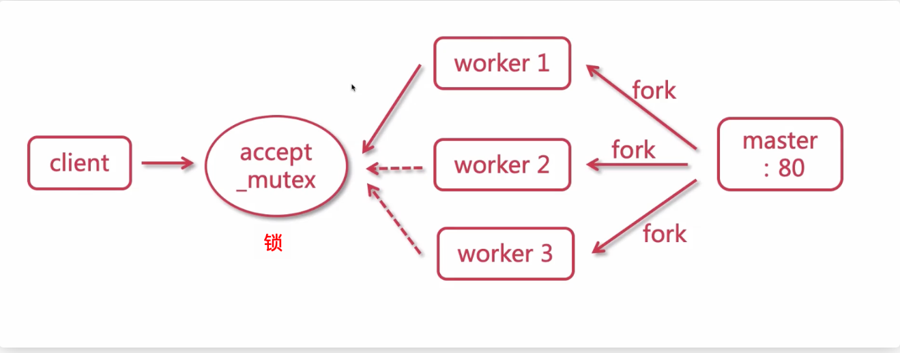
Worker事件处理机制
传统HTTP服务器是同步处理，当多个客户端请求时，如果Client1的请求被阻塞，Master会fork新的worker进程处理
但是Nginx采用的是异步非阻塞方式，如果Client1的请求被阻塞，worker会取处理下一个请求，不会阻塞当前worker进程。所以Nginx的一个worker进程可以并发处理大量请求
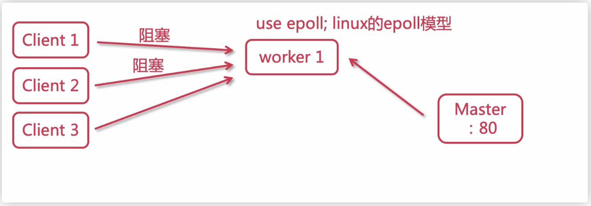
Nginx配置文件
后面学习Nginx配置，每次修改配置文件，一定要重载才能生效
systemctl reload nginx # 以系统服务的方式启动nginx
nginx.conf配置文件
# master进程会启动worker进程，该选项设置在系统中显示启动该进程的用户名（一般不改动，默认nobody）
# user nobody
# 启动的worker进程数
worker_processes 1;
# 错误日志放置的路径 notice、info是错误日志的级别，比如：info就是日志级别大于info才生成日志
# 默认地址为/var/log/nginx/error.log ，可通过nginx -V返回的--eror-log-path字段获取实际值
#error_log logs/error.log;
#error_log logs/error.log notice;
#error_log logs/error.log info;
# pid文件存放路径,默认：/var/run/nginx/nginx.pid，可通过nginx -V返回的--pid-path字段获取实际值
#pid logs/nginx.pid;
# 配置事件处理方式、worker最大连接数
events {
use epoll; # 使用epoll事件处理机制（默认值）
worker_connections 1024; # 每个worker进程处理的最大连接数
}
# http模块配置
http {
include mime.types; #include是引入关键字，这里引入了mime.types这个配置文件的内容（同在conf目录下，mime.types是用来定义，请求返回的content-type）
default_type application/octet-stream; #mime.types未定义的，使用默认格式application/octet-stream
# 访问日志格式
#log_format main '$remote_addr - $remote_user [$time_local] "$request" '
# '$status $body_bytes_sent "$http_referer" '
# '"$http_user_agent" "$http_x_forwarded_for"';
# 访问日志地址，默认：/var/log/nginx/access.log，可通过nginx -V返回的--http-log-path字段获取实际值
#access_log logs/access.log main;
# 详见下文
sendfile on;
#tcp_nopush on;
keepalive_timeout 65; # TCP链接超时时间,单位秒
# 压缩相关，详见下文
gzip on; # 开启压缩，压缩后发送给客户端
# 详见下文
server {
//xxx
}
}
sendfile配置
打开sendfile，用户请求的数据不用再加载到nginx的内存中，而是直接发送
高负载的场景下，使用 sendfile 功能可以降低 CPU 和内存的占用，提升服务器性能
http{
sendfile:on # off
}
# 或者指定某个server开启
server {
location / {
sendfile off;
...
}
}
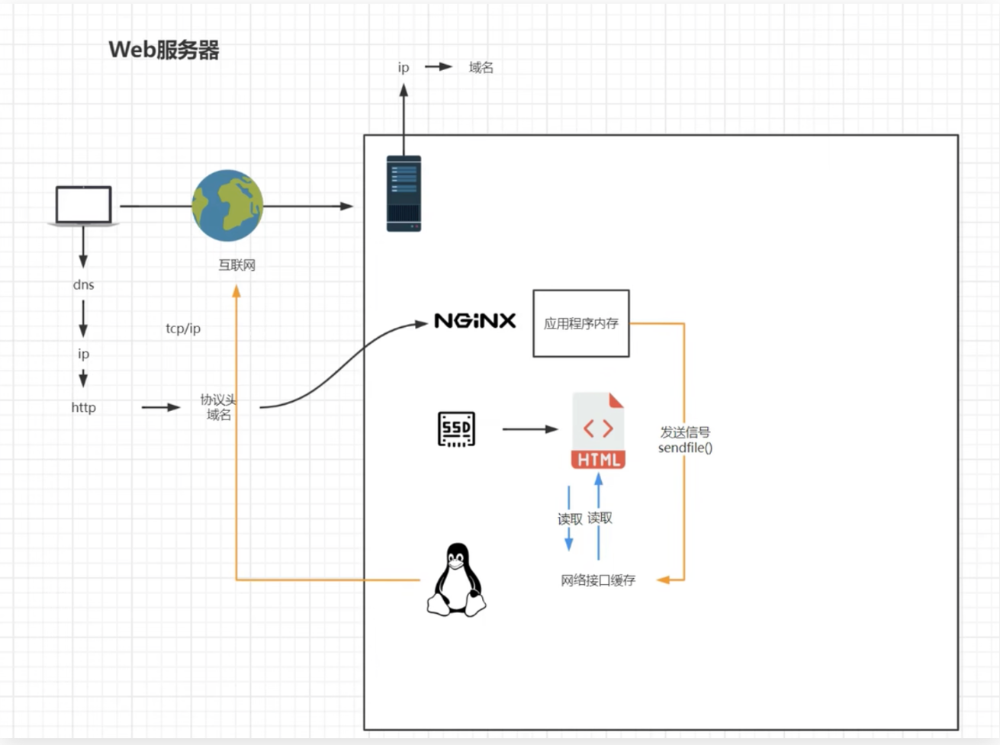
gzip配置 #一般不用
http{
gzip on; # 开启压缩，压缩后发送给客户端
gzip_min_length 1;# 设置最小压缩下限。1就是小于1字节的文件不压缩
gzip_comp_level 3 # 压缩级别0-9，值越大文件就压缩的越小，相应的会损耗更多性能
gzip_type text/plain application/javascript image/* # 指定哪些 MIME 类型，开启压缩（不写默认全部），可以使用通配符 image/* 就是所有图片。具体哪些类型可以看conf/mime.types文件
}
nginx 中的 gzip 压缩分为动态压缩、静态压缩
- 动态压缩：服务器给客户端返回响应时，消耗自身的资源进行实时压缩，保证客户端拿到 gzip 格式的文件
gzip on开启的就是动态压缩，gzip_comp_level设置的级别高，可能会造成CPU占用过高（文章：简单一招竟把nginx服务器性能提升50倍）
- 静态压缩：直接将预先压缩过的 .gz 文件返回给客户端，不再实时压缩文件，如果找不到 .gz 文件，会使用对应的原始文件
该功能需要模块： ngx_http_gzip_static_module（默认不会被构建）
我们可以通过下面命令查看，当前安装的是否包含该模块
./nginx -V #注意大写
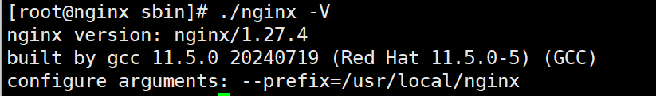
如果不包含，需要重新编译Nginx
./configure --with-http_gzip_static_module # 指定编译配置，这个参数安装模块`ngx_http_gzip_static_module`
make # 编译
make install # 安装
包含该模块，则可以启用下面配置
http{
gzip_static on;
gzip_proxied expired no-cache no-store private auth;
}
server配置
虚拟主机配置（可以启用多个），多个server字段，会根据请求的域名+端口从前向后匹配
用户访问www.lxxhaven.top（注意：需要解析到当前Nginx的这台机器），请求会匹配到下面的配置中
（我们本地测试时可以直接修改win系统的hosts，建立域名与Nginx所在机器IP的映射）
（server_name设置为localhost，即表示匹配任何打到这台机器的请求）
需要有域名，在哪个服务商进行解析都可以
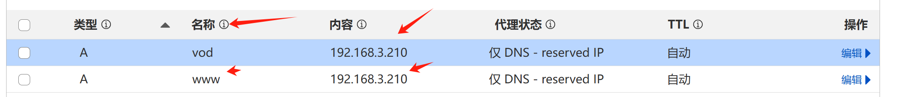
在虚拟机创建目录
cd /
mkdir -p www/www
mkdir -p www/vod
nginx.conf配置文件内容
[root@nginx conf]# cat nginx.conf
worker_processes 1;
events {
worker_connections 1024;
}
http {
include mime.types;
default_type application/octet-stream;
sendfile on;
keepalive_timeout 65;
#虚拟主机
server {
listen 80;
#域名或者主机名,还可以配置多个域名为同一个网页解析，直接在server_name添加即可
server_name www.lxxhaven.top;
location / {
root /www/www;
index index.html index.htm;
}
error_page 500 502 503 504 /50x.html;
location = /50x.html {
root html;
}
}
#虚拟主机2
server {
listen 80;
server_name vod.lxxhaven.top;
location / {
root /www/vod;
index index.html index.htm;
}
error_page 500 502 503 504 /50x.html;
location = /50x.html {
root html;
}
}
}
不同域名进行访问
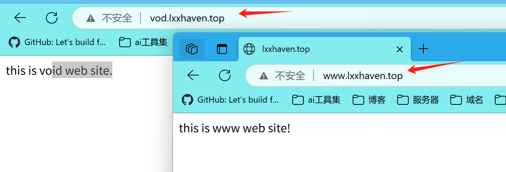
反向代理与负载均衡
反向代理：这种代理方式叫做，隧道代理。有性能瓶颈，因为所有的数据都经过Nginx，所以Nginx服务器的性能至关重要
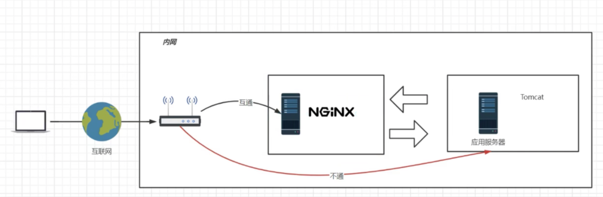
负载均衡：把请求，按照一定算法规则，分配给多台业务服务器（即使其中一个坏了/维护升级，还有其他服务器可以继续提供服务）
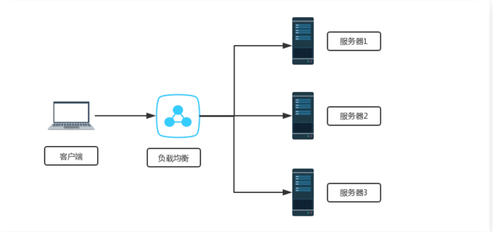
L4、L7负载均衡
L4负载均衡
在传输层（第四层）上工作的。它基于 IP 地址和端口号来进行负载均衡，不考虑传输的具体内容，仅通过查看传入数据包的目标 IP 地址和端口号，并根据预定义的规则将其转发到后端服务器上。
四层负载均衡器的主要优点是性能高，因为它只关注传输层的信息，不需要解析应用层协议的数据。常见的四层负载均衡器：
- F5硬负载均衡（硬件，价格昂贵）
- LVS四层负载均衡
- Haproxy四层负载均衡
- Nginx四层负载均衡（Nginx 1.9版本后才支持，用得少Nginx一般用做七层负载均衡）
L7负载均衡
在应用层（第七层）上工作的。它不仅考虑了传输层的信息（如 IP 地址和端口号），还分析了传输的应用层数据，例如 HTTP 请求的 URL、Cookie、报头等信息。基于这些信息，七层负载均衡器可以做出更精细的决策，并根据具体的应用需求将流量分发到不同的后端服务器上。
七层负载均衡器在传输层和应用层之间工作，因此它比四层负载均衡器更智能，可以实现更复杂的负载均衡策略。常见的七层负载均衡器：
- Nginx七层负载均衡
- Haproxy七层负载均衡
- apache七层负载均衡（并发到达百万级别，性能会大幅下降）
Nginx负载均衡
负载均衡配置
反向代理单个服务器
启用proxy_pass，root和index字段就会失效
proxy_pass后的地址必须写完整 http://xxx、https://xxx
注意：目标服务器如果是https的，需要特殊配置
当请求命中了这条规则，会被转发到目标服务器地址
http{
server {
listen 80;
server_name localhost;
location / {
proxy_pass http://xxx; # 参数是 http://server_name;
proxy_pass http://qq.com; #例子
}
}
}
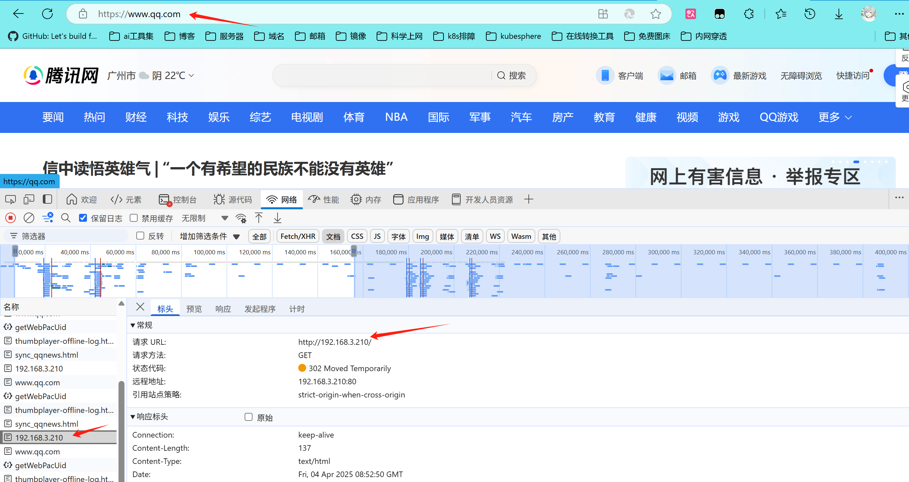
路径 + 参数会被一起转发
假设Nginx机器的地址为：http://www.xxx.com
请求 http://www.xxx.com/test?a=1
会被 proxy_pass地址/test?a=1
重写需求： 例如只有api前缀的才转发到后台服务器，但是接口并不包含api路径
location / {
rewrite ^/api/(.*) $1
proxy_pass http://xxx; # 参数是 http://server_name
}
请求 http://www.xxx.com/api/test?a=1
会被 proxy_pass地址/test?a=1
反向代理集群
上面Nginx接到请求后，会转发到一个目标地址。可以设置多个，实现负载集群
请求会代理到192.168.3.210:80和192.168.3.211:80这两个服务
每次访问随机分配到两个地址
http{
upstream test_server{ # 参数是server_name
server 192.168.3.210:80; #如果是80端口，可以省略不写
server 192.168.3.211:80;
}
server {
listen 80;
server_name localhost;
location / {
proxy_pass http://test_server; #与上面的upstream一致
}
}
}
设置权重
多个请求，Nginx会根据权重分配
upstream test_server{
server 192.168.3.210:80 weight=10;
server 192.168.3.211:80 weight=80;
}
关闭
为什么使用down关闭，而不是直接删除？请看ip_hash部分
upstream test_server{
server 192.168.3.210:80 down; #表示某个机器不参与负载均衡,让机器休息
server 192.168.3.211:80;
}
备用机
backup的这个机器正常是不会被访问到，如果192.168.3.211:80出现故障，无法提供服务，才会自动启用
upstream test_server{
server 192.168.3.210:80 ;
server 192.168.3.211:80 backup;
}
动静分离配置
大多数用于中小型网站，让网站速度更快
这里添加另一个location是因为配置proxy_pass其他设置就已经失效了，所以要另行添加
http{
upstream test_server{
server 192.168.3.210:80;
server 192.168.3.211:80;
}
server {
listen 80;
server_name localhost;
location / {
proxy_pass http://test_server;
}
location /css {
#表示引用./html/css/html/index.html和index.htm
root html;
index index.html index.htm;
}
}
}